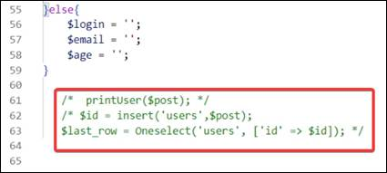
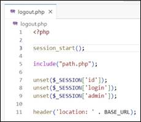

Задача урока: изучить этап выполнения
авторизации пользователя, подготовить валидацию, а также сделать удаление
сессии.
На занятии мы
узнаем:
1.
Как выполняется авторизации
пользователя.
2.
Какие функции требуются для
работы с данными пользователя.
3.
Как работает сессия и как
проходит ее окончание.
Авторизация пользователя
Зайдем в файл auth.php и подключим users.php, поскольку именно этот контроллер отвечает за регистрацию. Для этого в начале добавим строчку (рис. 10.1).
Рис. 10.1. Подключение к users.php
Добавим errormsg (рис. 10.2).
Рис. 10.2. Добавление errormsg
Модифицируем users.php так, чтобы он подходил и для авторизации. Переходим в этот файл и дописываем «&& isset($_POST[‘button-reg’])» в первом условии if (рис. 10.3).
Рис. 10.3. Добавление дополнительного условия
В самом низу удаляем комментарий, поскольку эта часть уже не понадобится (рис. 10.4).

Рис. 10.4. Удаление комментария
Делаем комментарий-пометку, чтобы указать, что здесь находится код для регистрации (рис. 10.5).

Рис. 10.5. Добавление комментария «код для
регистрации»
Копируем условие (рис. 10.6).
Рис. 10.6. Копирование необходимой части
кода
В самом низу файла вставляем условие, заменив reg на log и дописав сверху комментарий (рис. 10.7).
Рис. 10.7. Вставляем условие
В файле auth.php добавляем имя для кнопки (рис. 10.8).
Рис. 10.8. Добавление имени
Возвращаемся к условию и добавляем код для авторизации (рис. 10.9).
Рис. 10.9. Написание кода
В файле auth.php, в методе post, меняем auth.html на auth.php (рис. 10.10).
Рис. 10.10. Замена атрибута
В этом же файле необходимо поменять надпись на лейбле c «Адрес электронной почты» на «Почта» (рис. 10.11).
Рис. 10.11. Замена надписи
Теперь в else необходимо прописать получение данных с users по email и сравнить этот email с тем, который находится в базе данных. Также надо сравнить хэшированный пароль и нехэшированный пароль.
В переменную check закладываем функцию Oneselect по таблице users. В параметр email передаем входящее значение email. Также добавим условие на пароль: сравним хэшированный пароль с нехэшированным (рис. 10.12).
|
|
Функция «password_verify» - проверяет, соответствует ли пароль хешу. |
Рис. 10.12. Вставляем условие
Далее необходимо прописать код так, чтобы при успешной авторизации пользователя подключалась сессия, и пользователь возвращался на главную страницу сайта.
Отступаем перед написанным else и будем принимать глобальную переменную Session по id. Точно так же сделаем для login и admin (рис. 10.13).
Рис. 10.13. Запись переменных
Если в сессии пользователь является администратором, то при помощи header переносим его на страницу администратора (рис. 10.14).
Рис. 10.14. Перенаправление пользователя в админ-панель
Иначе пользователь будет перенаправляться на базовую страницу (рис. 10.15).
Рис. 10.15. Перенаправление пользователя на
главную страницу
В else пропишем ошибку авторизации, если такая возникнет (рис. 10.16).
Не стоит указывать пользователю, что именно введено неверно – логин или пароль. Это необходимо для того, чтобы избежать попыток взлома и не позволить узнать наличие почты или пароля в базе данных.
Например, если злоумышленник попытается войти в чужой аккаунт, и ему высветится уведомление о неверном введении пароля, он поймет, что данный адрес электронной почты уже содержится в базе данных. Затем методом подбора мошенник сможет ввести подходящий пароль и украсть аккаунт другого пользователя.
Рис. 10.16. Вывод ошибки
Добавляем еще один else (рис. 10.17). Тут мы подставляем наш email по пустому значению. Это необходимо, чтобы он сбрасывался и пользователю не приходилось вводить его заново.
Рис. 10.17. Объявление пустого значения
Обратим внимание, что в регистрации и в авторизации у нас есть одинаковый код по глобальной переменной SESSION. Поэтому мы можем вырезать его и прописать в качестве отдельной функции (рис. 10.18).
Рис. 10.18. Написание функции
Теперь копируем повторяющиеся куски, вырезаем из кода авторизации и кода регистрации и вставляем их в функцию (рис. 10.19).
Рис. 10.19. Часть, необходимая для
копирования и удаления
Итоговый вид функции (рис. 10.20).
Рис. 10.20. Итоговый вид функции
Теперь на месте удаленных кусков надо вызвать полученную функцию userAuth – как в коде регистрации, так и в коде авторизации (рис. 10.21 – 10.22).
Рис. 10.21. Функция userAuth в коде регистрации
Рис. 10.22. Функция userAuth в коде авторизации
Переходим в файл auth.php и дописываем имя нашему email (рис. 10.23).
Рис. 10.23. Присваивание значения
Также пропишем имя для нашего пароля (рис. 10.24).
Рис. 10.24. Присваивание значения name
Приступаем к проверке кода авторизации. Переходим на localhost. В качестве проверочной почты выберем admin@mail.ru. После авторизации нас перебросило на главную страницу. Причина в том, что несмотря на логин, данный пользователь не является администратором (рис. 10.25).
Рис. 10.25. Переход на главную страницу
Вернувшись на phpMyAdmin, видим в поле «admin» значение 0, а не 1, как должно быть у администратора (рис. 10.26).
Рис. 10.26. Изменение значения поля
Удаление сессии
Доработаем выход из сессии. Создаем файл logout.php (рис. 10.27).
Рис. 10.27. Создание файла logout.php
С помощью unset удалим перечисленные переменные: id, login и admin. После завершения сессии пользователь также будет перенаправляться на главную страницу сайта (рис. 10.28).
|
|
Функция «unset()» - удаляет перечисленные
переменные. Поведение unset() внутри пользовательской функции может
отличаться в зависимости от того, какой тип имеет переменная, которую
необходимо удалить. |

Рис. 10.28. Удаление сессии
Привяжем logout.php к header. Для этого вместо # в ссылке «Покинуть конструкт» пропишем наш php (рис. 10.29).
Рис. 10.29. Привязка файла в header
Проверим работу сайта. Заходим с аккаунта пользователя и нажимаем «Покинуть конструкт» (рис. 10.30).
Рис. 10.30. Кнопка «Покинуть конструкт»
Успешное завершение сессии и выход из аккаунта пользователя (рис. 10.31). Теперь пользователь может выходить и заходить обратно.
Рис. 10.31. Кнопка «Зарегистрировать
конструкт»
На этом десятое занятие окончено!
В рамках этого занятия мы сделали авторизацию
пользователя для работы с нашим сайтом, а также проверку на администратора,
настроили закрытие сессии текущего пользователя.
На следующем занятии мы займемся версткой админ-панели для работы с постами, опубликованными
на нашем сайте.
После прохождения каждого занятия рекомендуем повторить все термины,
которые были изучены, а также закрепить пройденный материал, ответив на
контрольные вопросы.
|
Это нужно запомнить |
|
|
|
Функция «password_verify» - проверяет, соответствует ли пароль хешу. Функция «unset()» - удаляет перечисленные переменные. Поведение unset() внутри
пользовательской функции может отличаться в зависимости от того, какой тип
имеет переменная, которую необходимо удалить. |

Контрольные вопросы
1. Что такое trim()?
2. Что такое mb_strlen()?
3. За что отвечает password_verify()?
4. Как называется ассоциативный массив, содержащий
переменные сессии, которые доступны для любого скрипта?